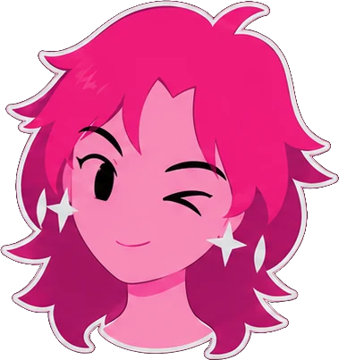
Oi!
Sou a Celeste — designer com foco em
e-learnings e animadora digital.
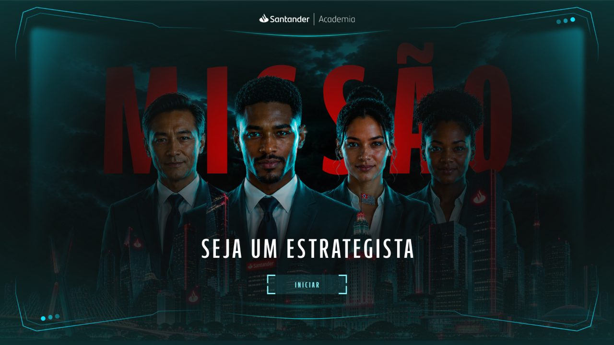
Design de interface de um curso em formato de missão, onde o participante avança por uma cidade-mapa desbloqueando territórios a cada etapa. O sistema cobre capa, menus, submenus, telas de destaque em versão clara e escura, cards e carrossel — todos partindo de uma mesma linguagem de HUD futurista, com pontuação, progresso e navegação sempre visíveis.
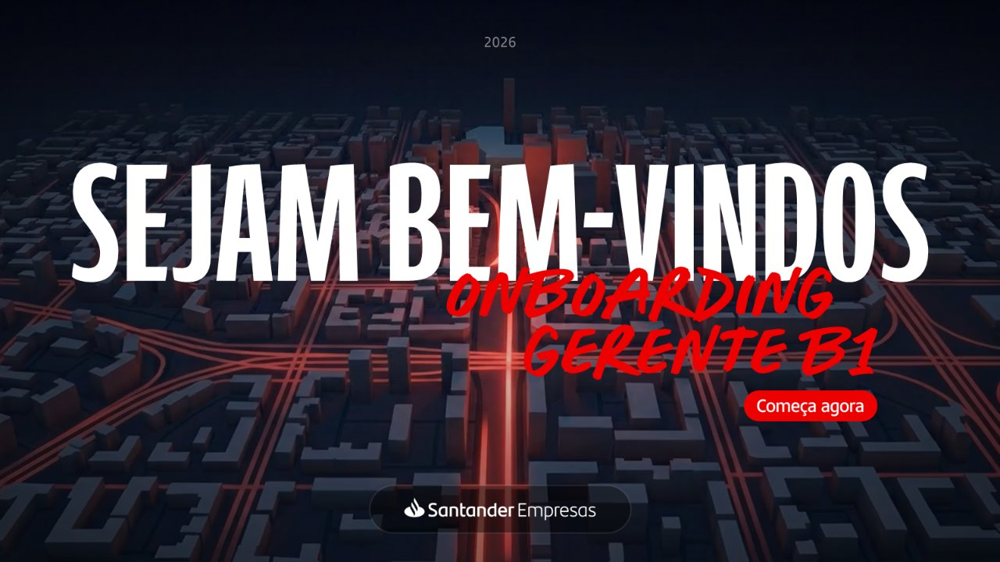
Apresentação de integração para gerentes recém-chegados ao segmento, construída sobre a identidade do Santander Empresas: vermelho e creme, tipografia de traço manual nos destaques e a chama da marca usada como máscara nos retratos. O sistema resolve capa, sumário, divisores de módulo, diagramas de rede e território, linha do tempo e fechamento.
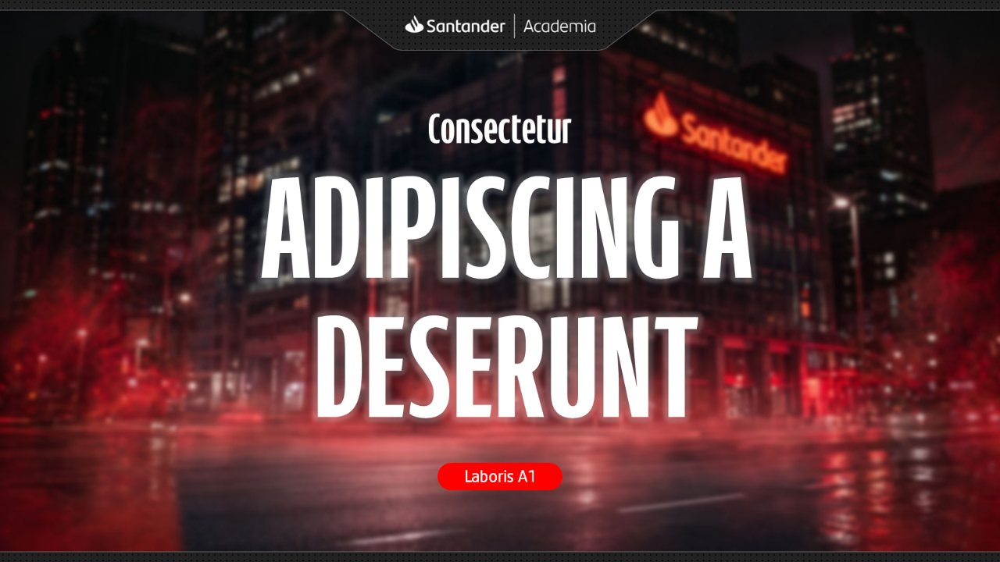
Treinamento presencial para gerentes de relacionamento, com uma direção de arte bem mais dramática que a do onboarding: preto absoluto, vermelho incandescente e fotografia de alto contraste. Objetos em cena — bússola, rei de xadrez, alvo com dardos, lâmpada — carregam a ideia de cada bloco sem precisar de texto.
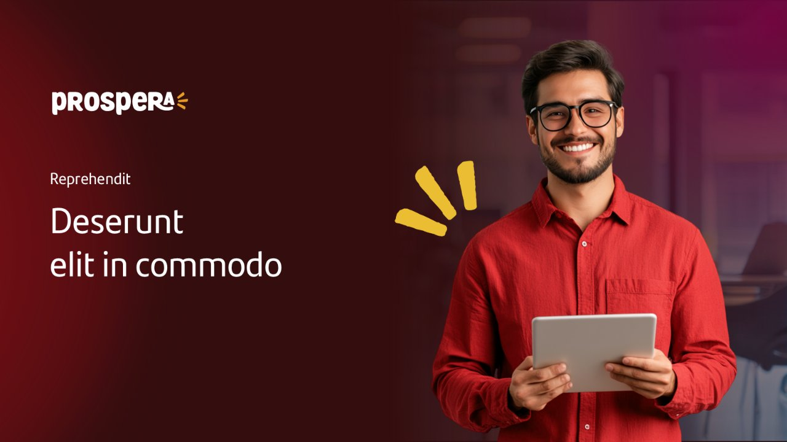
Programa de formação em quatro módulos para microempreendedores, com um sistema visual próprio dentro do universo Santander: fundo de papel texturizado, recortes de foto em cantos arredondados e um traço amarelo que funciona como marca de destaque. As telas aqui vêm dos quatro módulos, escolhidas para mostrar o sistema sem repetir estrutura.
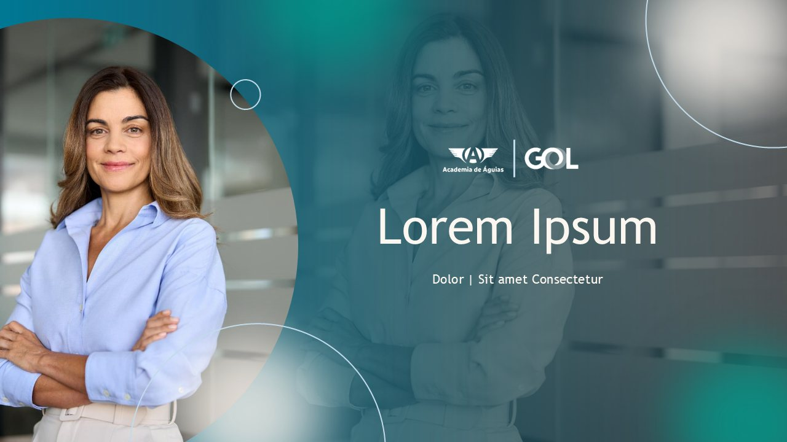
Material de team building para a GOL, em uma paleta de verde-azulado e branco que se afasta do vermelho corporativo dos outros projetos. A composição usa recortes circulares sobre fotografia e o símbolo da asa como elemento de ritmo entre as seções. Todas as telas têm animação — por isso cada item da galeria é um vídeo, não uma imagem parada.
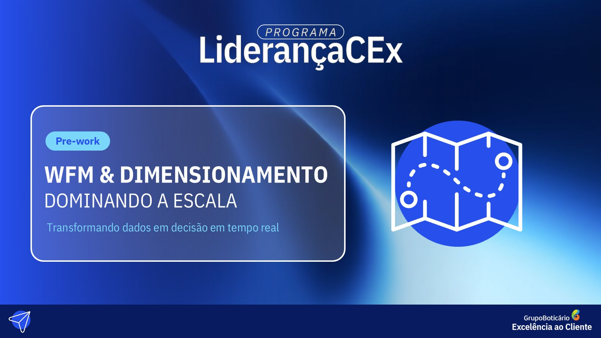
Materiais de apoio de um programa de capacitação de supervisores: pré-work, mapa mental e checklist. A identidade é um azul profundo com gradiente e traços de luz, e cada peça resolve um formato diferente — o mapa mental em paisagem, para leitura de tela; o checklist em A4 retrato, para imprimir e marcar à mão.
Curso sobre o programa de recompensas do banco, construído em torno de casos de atendimento: o participante assume o papel da gerente e responde a mensagens de clientes, escolhendo entre alternativas que mudam o rumo da conversa. A gravação mostra o percurso completo — abertura, conteúdo, os diálogos com decisão e o fechamento com feedback.
Curso de segurança contra incêndio construído inteiro na linguagem de rede social: cada tela é um post, com curtidas, comentários e hashtags, e o participante rola o feed acompanhando o Alex descobrir na prática por que a atitude diante de um alarme decide o desfecho. A escolha de formato faz um tema árido de treinamento obrigatório virar algo que se lê sem esforço.
Trilha de formação para o colaborador de rampa, em laranja e verde-azulado sobre fotografia de operação real. O curso cobre acessibilidade e manuseio de cadeiras de rodas, carregamento no porão e centro de gravidade da aeronave, alternando telas explicativas com interações de arrastar e escolher. É o mesmo cliente do Team Building, com uma identidade visual bem diferente.
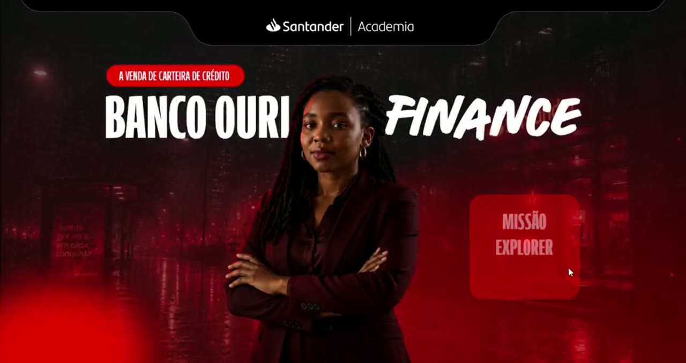
Business case de finanças construído como jogo: o participante entra no Banco Ouri Finance e avança por uma missão pontuada, com HUD de pontos e vidas sempre visível, telas de placar que celebram ou penalizam a escolha, peças de quebra-cabeça que se encaixam a cada acerto e medalhas no fechamento. A direção de arte é vermelho neon sobre preto, com brilho e reflexo tratados como material. Um dos itens é um trecho gravado do curso rodando, com o ciclo de quiz e pontuação.
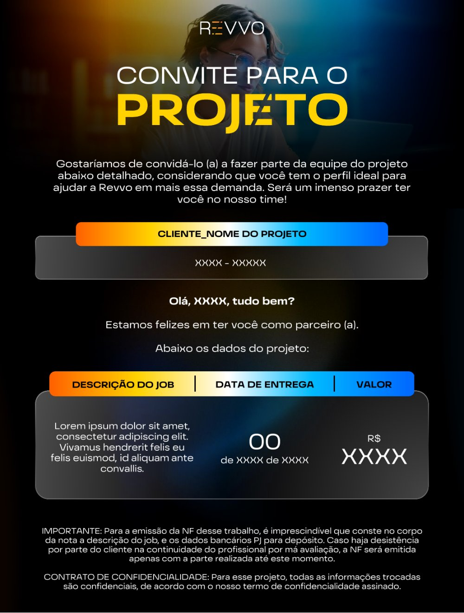
Documento que a Revvo envia ao convidar um freela para um projeto: apresenta a demanda, o prazo e o valor, e fecha com as condições de nota fiscal e confidencialidade. O desafio era fazer um documento contratual parecer um convite — daí o preto com gradiente de laranja a azul nas faixas de cabeçalho, que dá presença sem tirar a legibilidade. É um modelo em branco: os campos já vêm preenchidos com XXXX.
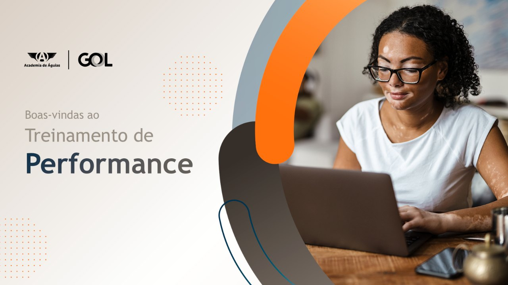
Treinamento de performance de aeronave para despachantes de voo — 101 slides, dos quais estas 18 mostram o sistema. O material resolve um problema difícil de design: explicar cálculo de gradiente, limite de obstáculo e velocidades de decolagem sem virar apostila. Usa isométricos da aeronave, diagramas de trajetória, ilustração de pista e visualização 3D de terreno, tudo amarrado por divisores de capítulo em laranja e teal.
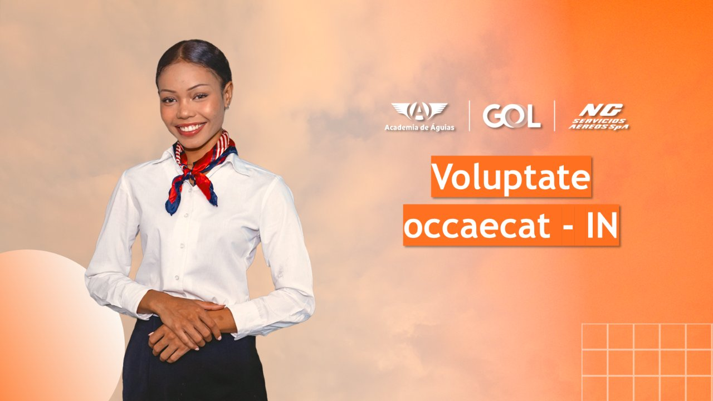
Dois treinamentos de segurança de cabine para tripulantes, primeiros socorros e equipes de emergência, que dividem o mesmo sistema visual: laranja quente sobre fotografia de operação, recortes circulares e ícones de traço. O desafio aqui é o oposto do usual — tema técnico e normativo, que precisa ser legível sob pressão, sem virar manual árido.
Curso sobre a gestão de reclamações no Reclame Aqui: o que a plataforma é, como o consumidor percorre a jornada de uma reclamação e como a empresa responde dentro do prazo. A construção é toda em navegação por estrada — o participante escolhe por onde seguir clicando nos balões — e fecha com um quiz de fixação. Os textos de resposta ao cliente aparecem como modelo, com o nome em placeholder.
Uma jornada de aprendizagem prática, dinâmica e interativa pelo Universo Gluon. Em uma missão espacial por bases orbitais e planetas, os participantes exploram o que é a plataforma, seus benefícios e como ela conecta pessoas, processos e tecnologia. Os vídeos, infográficos e desafios tornam os conteúdos complexos mais leves, visuais e envolventes.
 PDF · 29 páginas
PDF · 29 páginas
Um estudo de criação de personagem para a série animada Burnout Academy: da definição do conceito e da paleta de cores até a construção do model sheet completo, das expressões faciais e do color key do Bob — um adolescente nerd, ansioso e perfeccionista tentando sobreviver ao próprio universo escolar-corporativo.
 PDF · 12 páginas
PDF · 12 páginas
Estudo de ambientação a partir do quarto do Bob: da descrição do personagem e do seu conflito interno até a construção do espaço, com plano geral, ângulo em plongée e ponto de fuga único. A cena "Sair na Hora — Tentativa #37" traduz a ansiedade e o perfeccionismo do personagem através dos objetos do quarto, do quadro de recados aos post-its e à lixeira cheia de ideias descartadas.
 PDF · 17 páginas
PDF · 17 páginas
Bíblia de animação da série autoral Burnout Academy, uma comédia satírica sobre uma escola de elite que transforma adolescentes em executivos em miniatura. O documento reúne argumento, linguagem, universo narrativo, perfis de personagens, viabilidade mercadológica e cadeia de produção completa de uma série 2D cut-out voltada ao público jovem-adulto.
Teste de animação explorando movimento, timing e expressividade dos personagens dentro da estética 2D. Um exercício prático de atuação e lipsync aplicado ao estilo visual proposto para o projeto.
gire o celular para ver maior